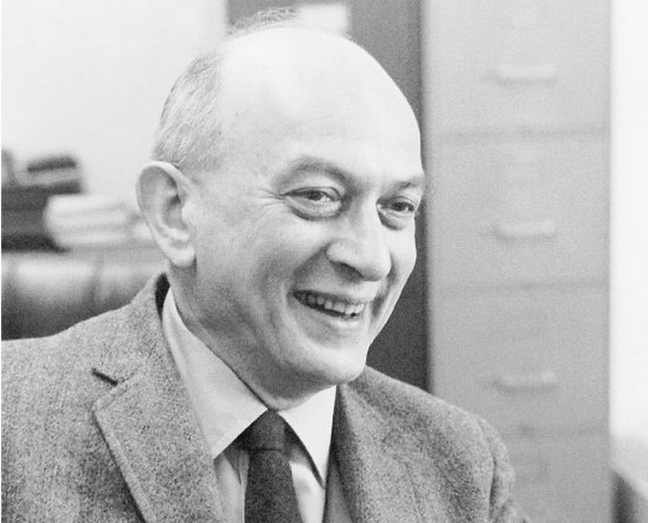

Aschův test – Proč lžeme, i když (ne)chceme?

Solomon Eliot Asch byl významným psychologem 20. století, který se proslavil hlavně díky svému nadčasovému testu konformity, který ukazuje, jak daleko je člověk ochoten zajít, jen aby zapadl a byl přijat společností. Přestože od tohoto testu uplynulo více než 70 let, je stále velmi aktuální. Každý z nás je totiž čas od času nucen podřídit se společnosti, a někdy to pro nás může být i výhodné, ale je dobré znát hranice mezi vlastním rozhodnutím a slepým následováním davu.
Solomon Eliot Asch se narodil roku 1907 v Polsku do židovské rodiny. Byl žákem Maxe Wertheimera (zakladatele gestaltismu, tj. tvarové psychologie), se kterým později spolupracoval. Sám Asch se později stal učitelem Stanleyho Milgrama (významného psychologa, známého pro vytvoření Milgramova testu). Asch se během své kariéry přestěhoval do Ameriky, kde se později oženil. Vyučoval zde na Swarthmore College společně s Wolfgangem Köhlerem (německým psychologem). Během svého života se věnoval výzkumu lidské společnosti.
Od roku 1930 sledoval nacistickou propagandu a došel k závěru, že propaganda je nejúčinnější při kombinaci strachu a nevědomosti. Asch se během svého výzkumu věnoval studii tzv. „Prestige Suggestion“ (prestižní návrh), kde záměrně vybral citáty známých osobností, které jsou vnímány negativně a jako autora udal osobnost, která je vnímána pozitivně. Načež došel k závěru, že citáty byly mezi společností posuzovány na základě osobnosti, a nikoliv myšlenky.
Během svého života také vydal učebnici Sociální psychologie. Mezi jeho nejznámější testy patří Aschův test konformity. Díky tomuto testu zjistil, že člověk je ochoten kvůli společnosti potlačit i své vlastní já. Taktéž udělal během svého života mnoho studií a přinesl pro sociální psychologii mnoho poznatků, na kterých staví psychologové dodnes.
Aschova testu konformity, který se uskutečnil roku 1951, se účastnili studenti, které testoval pod záminkou, že se jedná o zrakový test. Ve skutečnosti šlo ale o test konformity (snaha jedince podřídit se většině, aby lépe zapadl do skupiny). Během testu byl mezi několik nafingovaných studentů přiveden jeden pravý.
Následně měli porovnávat čáry na dvou papírech s tím, že vždy byla jen jedna stejně dlouhá na obou papírech. Většina studentů záměrně odpovídala špatně a poslední testovaný student, často odpověděl rovněž záměrně špatně, aby se podřídil většině. Asch tento test opakoval a zjistil, že pokud odpovídá špatně jen část studentů, testovaný student odpoví častěji správně. Testovaný student také odpověděl častěji správně, pokud mohl odpověď psát na papír. Když pak testovaní studenti vedli později rozhovor s Aschem, uvedli, že odpovídali špatně hlavně z důvodu, aby nevybočovali. Během tohoto testu se bylo ochotno podřídit přibližně 75 % zúčastněných. Asch měl údajně po uskutečnění testu prohlásit, že: „Tendence ke konformitě v naší společnosti je tak silná, že rozumní a dobře smýšlející mladí lidé jsou ochotni nazvat bílou černou.“
Celkově byl Aschův test naprosto revolučním testem, který položil základ pro další vývoj v oblasti sociální psychologie. Ukázal nový pohled na společnost a potřebu člověka se jí přizpůsobit, kterou máme už od nepaměti. Dříve nejspíše sloužila k přežití a přetrvala tak až do dnešní doby. Aschův test ukazuje, že člověk je ochoten podřídit se společnosti a může tím i získat mnoho výhod, ale je nutné najít rovnováhu mezi podřízeností a vlastní osobou, neboť slepého následování se dá velmi dobře zneužít.
Článek zpracovala: Sandra Strejčková
Březen 2026ZDROJE